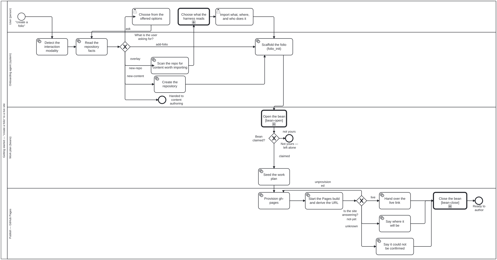

Premiers pas
Cette page traite de la toute première conversation — de ce qui se passe entre le moment où quelqu’un dit « Je veux créer un folio » et celui où un site publié est prêt à être ouvert. Si vous possédez déjà un folio et souhaitez configurer la chaîne d’outils, passez directement à §4 Installer et vérifier.
- 1. « Créer un folio » correspond à cinq requêtes distinctes
- 2. Comment l’agent décide — et pourquoi il s’agit d’une table, et non d’un jugement
- 3. À quoi ressemble la conversation
- 4. Installer et vérifier
- 5. Connecter votre harnais LLM
- 6. Convertir un dépôt existant
- 7. Le voir publié
- 8. Personnaliser la page d’accueil
- 9. Suivre le travail avec
beans - Prochaines étapes
1. « Créer un folio » correspond à cinq requêtes distinctes
Dites cette phrase à cinq personnes différentes et vous obtiendrez cinq travaux complètement différents. Le premier travail de l’agent n’est pas de commencer ; c’est de déterminer laquelle de ces intentions était la vôtre.
| vous voulez dire | vous disposez de | ce que vous coûte une supposition erronée |
|---|---|---|
| Un nouveau folio dans un nouveau dépôt | rien pour l’instant | — |
| folio-assistant ajouté au dépôt que vous avez déjà | votre propre projet, avec ses propres fichiers | un folio échafaudé par-dessus un travail que personne n’a examiné au préalable |
| Un autre folio dans un dépôt qui en contient déjà un | une instance de folio-assistant | un second dépôt dont vous ne vouliez pas, et un corpus scindé |
| Un nouveau document dans le folio que vous avez déjà | un folio, et un chapitre en tête | un folio vide tout entier, et le chapitre toujours pas rédigé |
| Quelque chose que vous préférez décrire avec vos propres mots | — | — |
La quatrième ligne mérite que l’on s’y attarde. Ce n’est pas une erreur de votre part — « folio » est un terme peu familier, et en demander un alors que vous vouliez un chapitre au sein d’un folio est l’erreur la plus naturelle qui soit. Un agent qui échafaude directement sur cette base produit un dépôt vide au lieu du paragraphe que vous aviez demandé.
2. Comment l’agent décide — et pourquoi il s’agit d’une table, et non d’un jugement
Le tri constitue un artefact réel et lisible plutôt qu’une habitude arbitraire de l’agent :
- le processus est
folio-assistant-core/processes/conduct/getting-started.bpmn; - la décision en son centre est
decisions/folio-intent.dmn, une table de décision DMN que vous pouvez ouvrir dans n’importe quel outil DMN et modifier sans toucher au code.

Source : folio-assistant-core/processes/conduct/getting-started.bpmn — le SVG est généré par bun run cat render:bpmn.
Les trois faits
La passerelle lit exactement trois éléments, et deux d’entre eux proviennent d’une simple observation plutôt que d’une question :
| fait | comment il est obtenu |
|---|---|
isFolio | un fichier harness.config.json est-il présent dans ce répertoire ? |
repoHasContent | l’arbre de travail contient-il des fichiers appartenant au projet de quelqu’un, par opposition à un dépôt vide ? |
statedIntent | ce que vous avez réellement dit — l’une des cinq options, ou unstated |
statedIntent est un fait concernant la conversation. Il reste à unstated jusqu’à ce que vous
ayez précisé votre choix, et le déduire du ton ou de ce qui serait le plus commode est
précisément l’erreur que la table a pour but d’éviter.
isFolioconcerne le répertoire, pas vous. Quelqu’un qui utilise folio-assistant depuis des années se trouve toujours dans un répertoire oùisFolio=falselorsqu’il en ouvre un nouveau. L’expérience modifie le niveau d’explication de l’agent ; elle ne change pas la branche qu’il emprunte.
Les sept règles
| # | intention exprimée | est un folio | a du contenu | → |
|---|---|---|---|---|
| 1–4 | l’une des quatre | – | – | cette branche |
| 5 | unstated | oui | – | ask |
| 6 | unstated | non | oui | ask |
| 7 | unstated | non | non | nouveau folio ici |
La politique de correspondance est FIRST, de sorte que les règles 1 à 4 priment sur toute inférence : une personne qui
exprime ce qu’elle souhaite n’est jamais contredite par une heuristique sur son système de fichiers.
Pourquoi deux règles renvoient « ask », et pourquoi c’est là tout l’intérêt
Seule la règle 7 peut être tranchée par simple observation. Un répertoire qui est déjà un folio est
compatible avec trois requêtes distinctes, et un répertoire contenant le projet de quelqu’un
est compatible avec deux d’entre elles. La table ne masque pas cette réalité — elle
renvoie ask.
Cela a beaucoup plus d’importance qu’il n’y paraît :
askest un résultat produit par la table, et non une décision prise par l’agent.
Un agent ne peut pas emprunter une branche que la table n’a pas renvoyée, ce qui rend la question obligatoire plutôt que polie. Un agent laissé libre de décider s’il doit poser la question choisira, sous la moindre pression visant à paraître serviable, de ne pas la poser — or les trois cas ambigus sont précisément ceux où deviner coûte le plus cher.
Lorsque vous répondez, votre réponse devient statedIntent et la même table est
évaluée à nouveau. C’est pourquoi le diagramme boucle sur Lire les faits du dépôt
plutôt que de sauter directement vers une branche : votre réponse est une preuve, lue
comme n’importe quel autre fait.
Modifier la table
La table est un fichier XML comportant sept règles. Pour ajouter un sixième type de requête,
ajoutez une règle et ajoutez une branche correspondante à la passerelle — le chargeur refuse de
démarrer un processus dont la table peut renvoyer un résultat pour lequel aucune branche n’est nommée,
garantissant ainsi qu’aucun décalage n’apparaisse entre les deux. Rien dans src/ n’a besoin d’être modifié.
3. À quoi ressemble la conversation
La forme de la question précède son contenu. L’agent détermine la façon dont
vous préférez être interrogé — options sélectionnables, discussion classique, lecture à voix haute,
grands caractères — et l’enregistre dans interaction/interaction.json afin qu’aucune session ultérieure
ne vous le redemande. Voir Accessibilité.
Ensuite, lorsque la réponse est véritablement ambiguë :
Vous : Je veux créer un folio
Assistant : Ce répertoire contient déjà un folio (
content/atlas/), il y a donc plusieurs interprétations possibles —
- Ajouter quelque chose au folio présent ici — un chapitre, un document (recommandé — c’est ce que « créer un… » signifie le plus souvent depuis l’intérieur d’un folio)
- Ajouter un second folio aux côtés d’« atlas »
- Démarrer un nouveau folio dans un nouveau dépôt
- En savoir plus
(Ne pas répondre convient tout à fait — j’opterai pour l’option 1 et vous montrerai le résultat avant d’écrire quoi que ce soit.)
Et ensuite, sur quoi démarrer — parce qu’« un folio » dans l’abstrait n’est pas une chose que quiconque souhaite réellement :
| type de contenu | ce que c’est | prérequis |
|---|---|---|
| paper | un article scientifique ou un livre, assertions formelles étayées par Lean, composé avec LaTeX | chaîne d’outils Lean, TeX |
| document | prose structurée — orientations politiques, norme, rapport | pandoc ; ni Lean, ni TeX |
| WHO SMART DAK | un kit d’adaptation numérique (L2) — personas, processus, éléments de données, tables de décision | — |
| WHO SMART IG | un guide d’implémentation FHIR (L3), élaboré à partir d’un DAK L2 | Java, SUSHI, IG Publisher |
Voir Types de contenu pour découvrir ce que chaque formalisme vous apporte.
4. Installer et vérifier
Suivez le guide d’Installation, puis lancez :
bun run cat check-deps
bun doit être signalé comme présent. Tout élément requis par votre type de contenu qui
serait manquant est listé avec une indication d’installation — un folio de type document n’a besoin
d’aucune des lignes Lean ou TeX.
5. Connecter votre harnais LLM
Enregistrez folio-assistant en tant que serveur MCP — consultez Connecter un harnais LLM pour Claude Code, Antigravity, Gemini CLI et les clients MCP génériques.
Les outils les plus pertinents pour cette page :
| Outil | Rôle |
|---|---|
folio_init | Échafauder un folio. Enregistré comme un outil générique, car il s’exécute avant que le folio n’ait un type de contenu |
workflow_start / workflow_next / workflow_complete | Exécuter getting-started.bpmn comme un vrai processus ; workflow_next indique ce qui est activé actuellement et quelle compétence l’implémente |
work_plan_prime | Présenter le plan de travail (beans) |
check_dependencies | Détecter les chaînes d’outils installées |
skill_list / skill_fetch | Découvrir et charger les instructions d’une compétence |
La liste complète des outils se trouve sur la page Compétences & rôles ; les outils spécifiques à un type de contenu n’apparaissent que lorsque l’adaptateur correspondant est actif.
6. Convertir un dépôt existant
Sur la branche overlay, l’agent examine les lieux avant de toucher à quoi que ce soit :
bun run cat scan:repo # rapport en lecture seule
bun run cat scan:repo -- --json # identique, sous forme de faits
Il trie ce qu’il trouve en trois catégories — library (documentation source
rédigée par un tiers), content (prose rédigée ici), et unclassified (non classé).
La troisième catégorie est délibérée. Un classificateur qui force chaque fichier dans l’une de deux catégories a une précision que nul ne peut évaluer, et matérialise ses erreurs sous la forme de fichiers déplacés. Celui-ci vous indique ce qu’il n’a pas su classer et vous laisse décider.
Puis trois questions, auxquelles on répond par simple sélection, toutes posées par répertoire plutôt que par fichier :
- Importer ou non ? — tout, les sources uniquement, rien, ou choisir par catégorie.
- Où va chaque groupe ? — dans
library/oucontent/, pour les groupes sur lesquels l’outil hésitait. - Laisser en place ou réorganiser ? — laisser en place est la recommandation formelle et doit être prise au mot. Désencombrer est une préférence ; un lien relatif rompu dans votre README est un défaut.
Rien n’est déplacé tant que la question 3 n’a pas reçu de réponse. Cette étape est marquée
relaxable="false" dans le BPMN, de sorte qu’aucun paquet de contenu ne peut la désactiver.
Discipline complète : la compétence
repo-conversion.
7. Le voir publié
La création d’un folio doit se conclure par un lien. Immédiatement après l’échafaudage :
bun run cat pages:bootstrap # déduire l'adresse, générer le rapport, sans vérification réseau
bun run cat pages:bootstrap -- --wait # sonder jusqu'à ce que le site réponde (durée limitée)
La commande déduit l’adresse à partir de harness.config.json ou du dépôt distant origin, identifie
les flux de publication d’après ce qu’ils font plutôt que d’après leur nom, et rapporte
l’un des trois états suivants :
| signification | |
|---|---|
| live | le site a répondu. Voici le lien |
| not yet | un 404 mesuré — l’adresse est correcte et la première compilation n’y est pas encore déployée |
| could not check | aucune adresse n’a pu être déduite, rien n’a été sondé, ou la requête a échoué |
Le troisième état n’est pas une variante adoucie du deuxième, et l’agent ne vous dira pas « il devrait être en ligne sous peu » sur cette seule base. Un 404 mesuré est une preuve ; une requête qui a échoué est une absence de preuve, et un auteur induit en erreur partira à la recherche d’un site qui ne devait jamais voir le jour.
Ces trois mêmes états forment une table de décision —
decisions/pages-live-gate.dmn —
et scripts/pages-bootstrap.ts est testé pour concorder exactement avec elle, afin que le
script et la table ne puissent pas diverger.
8. Personnaliser la page d’accueil
La page d’accueil de votre site s’ouvre sur la description propre à votre instance, intégrée
au sein de votre propre image de fond. Les deux proviennent d’un seul et même fichier — <name>.json à
la racine du dépôt — et rien concernant le chat grincheux de la plateforme n’est inscrit en dur
dans le gabarit. Modifiez le fichier ; la page suivra.
Le nœud markdown que vous modifiez
// <name>.json -- the DECLARATION. Every key below is one of its top-level
// fields, which is what settles this label: it is not the folio config.
{
"title": "My Folio", // the left sidebar's heading
"description": "One line.\nAnother line.", // ← the landing markdown
"icon": "mark-small", // which image is the browser tab's
"images": [ /* … */ ]
}
description est du markdown, restitué tel quel. C’est le nœud que la page
d’accueil affiche ; il n’y a pas de page séparée à synchroniser avec lui, et c’est bien là tout le propos —
une description qui apparaît à deux endroits différents est une description qui finira par être en désaccord
avec elle-même.
Votre propre image de fond
Une image devient l’arrière-plan de la page d’accueil en déclarant role: "landing" ainsi que le
format d’écran pour lequel elle est cadrée :
{
"id": "landing-laptop",
"src": "docs/assets/img/my-backdrop.webp",
"role": "landing",
"layout": "laptop", // also: "mobile", "card"
"width": 1671, "height": 941,
"textRegion": { "x": 0.205, "y": 0.285, "w": 0.625, "h": 0.235 }
}
textRegion indique où les mots peuvent se loger en toute sécurité, sous forme de fractions de l’image. Cette
valeur est conçue manuellement, et non calculée, car elle indique là où l’image est calme —
un jugement sur la composition qu’aucune analyse de pixels ne peut remplacer. L’image de fond pour ordinateur portable de la
plateforme comprend une bulle de pensée dont la partie inférieure est dégagée,
une marque occupant son tiers supérieur et l’oreille d’un chat pointant dans son coin inférieur gauche ; le
cadre évitant ces trois éléments a été trouvé en générant des zones candidates et en les observant.
Faites de même pour la vôtre.
Déclarez une variante par format d’écran. Chacune possède sa propre zone, car la même composition se positionne différemment dans un recadrage vertical.
Puis :
bun run cat docs:harness # push the declaration into docs/_data/
bun run cat docs:harness -- --check # ...and fail if stale (for CI)
Trois choses qu’elle ne fera pas
| vous déclarez | la page fait |
|---|---|
| une image de fond avec une zone | affiche votre description à l’intérieur de celle-ci |
| une image de fond sans zone | montre l’image, et place les mots au-dessous de celle-ci |
| aucune image de fond | montre les mots seuls |
La ligne intermédiaire est délibérée. Un texte positionné au hasard finit par atterrir sur le chat, si bien qu’une zone non déclarée signifie « ne pas superposer », et jamais « n’importe où fera l’affaire ». Et un folio sans illustration graphique est tout à fait ordinaire, pas défectueux.
Si vous déclarez une variante mobile et qu’un smartphone se connecte, il reçoit ce fichier — et
si vous ne l’avez pas fait, il reçoit la variante la plus large dont vous disposez. Ce repli constitue une véritable
dégradation, car la zone d’un recadrage large est inadaptée à un écran étroit ; cette situation est
signalée plutôt que dissimulée, afin que le moteur de rendu puisse refuser la superposition au lieu de
placer le texte à un endroit que personne n’a choisi.
9. Suivre le travail avec beans
folio-assistant utilise beans comme unique
mécanisme de plan de travail — durable d’une session à l’autre, partagé entre agents, et versionné
dans le dépôt.
scripts/install-beans.sh # install the CLI if missing
beans prime # emit work-plan priming for agents
beans list # current open items
beans create "draft chapter 1" # open an item
beans <id> --status in-progress # claim an item
Vérifiez avant de créer.
beans creategénère un nouvel identifiant à chaque appel et n’effectue aucune déduplication. La réexécution d’une étape scriptée sans contrôle d’existence a produit 14 688 beans en double dans un folio en un seul après-midi. Cette vérification figure dans la compétencetodo-manager.
Le hook SessionStart présente le plan au début de chaque session, et l’outil MCP
work_plan_prime expose cette même surface à tout agent connecté.
Prochaines étapes
- Accessibilité — comment l’agent pose ses questions, et le contrôle des paramètres sur ce site
- Tutoriel — rédiger un article
- Rédiger un document
- Types de contenu — le formalisme propre à chaque domaine
- Flux de publication — chaque processus au sein du dépôt
- Architecture — adaptateurs, compétences, et le modèle de blocs